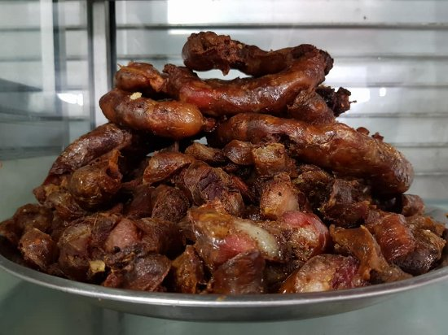

Urutan ini bukanlah sesuatu yang berhubungan dengan matematika, melainkan sebutan makanan khas dari Bali yang super enak. Nah, urutan ini adalah sosis khas andalan Bali yang dibuat dari daging Babi. Kelezatannya sangat menggoda dan hal ini bukan diakui oleh turis lokal saja, bahkan turis mancanegara pun sangat menyukai sosis khas Bali ini. 